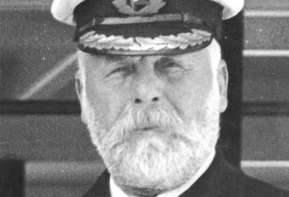
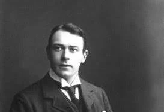
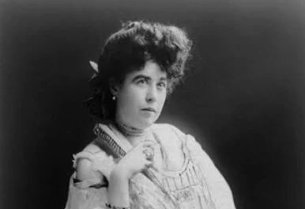

Captain Edward Smith
Edward John Smith was the captain of the RMS Titanic. He was a very experienced sea captain and had worked for the White Star Line for many years before Titanic's maiden voyage. Because of his experience, he was trusted to command some of the company's most important passenger ships.
When Titanic struck the iceberg on the night of April 14, 1912, Smith was responsible for helping organize the emergency response. The crew began preparing the lifeboats and sending distress signals to nearby ships. Smith remained on board during the sinking and died in the disaster.

Learn more about Captain Smith
Smith had already commanded several large passenger ships before Titanic. He was one of the most experienced captains working for the White Star Line at the time.
Thomas Andrews
Thomas Andrews was a naval architect and one of the main people involved in the design of Titanic. He worked for Harland and Wolff, the shipbuilding company in Belfast that constructed the ship.
Andrews traveled on Titanic during its maiden voyage so that he could observe the ship and identify possible improvements. After the collision with the iceberg, he inspected the damage and quickly understood that the ship would not be able to remain afloat.
Survivor accounts describe Andrews as spending much of the remaining time warning passengers and encouraging them to put on life jackets and move toward the lifeboats. Andrews did not survive the sinking.

Learn more about Thomas Andrews
Andrews knew the structure of Titanic extremely well. Because of this knowledge, he was able to understand the seriousness of the damage shortly after the collision.
Margaret "Molly" Brown
Margaret Brown was an American first-class passenger who survived the sinking of Titanic. She was already involved in charitable and social causes before the disaster, but her actions during and after the sinking made her one of the most famous Titanic survivors.
Brown escaped from Titanic in Lifeboat No. 6. During the evacuation she helped other passengers and later encouraged the people in her lifeboat to help row. After the disaster, she also helped organize support for survivors who had lost money, clothing, and personal belongings.
In later years, Brown became widely known as "The Unsinkable Molly Brown." Her story appeared in books, films, and stage productions, helping make her one of the best-known people connected to Titanic.

Learn more about Molly Brown
Brown continued to support charitable causes after the disaster and became an important public figure in the years that followed.
"Well, boys, do your best for the women and children, and look out for yourselves."
— Captain Edward Smith, according to survivor testimony